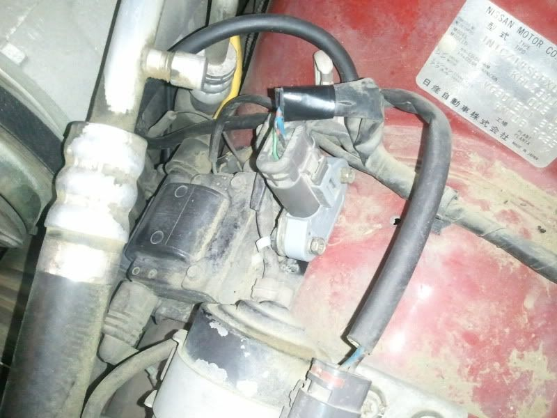

-
Claimed…not sure if proven. One person made claims, everyone else decided you'd only see a change if your old one was on its way out. I have cars running perfectly smooth with a Z31 CAS and the PRW-2 versus with a good low-mileage Z31 PTU....and given the CAS' only job is to tell the ECU the position of the crankshaft I can't see how there would be benefits with better spark…but who knows in reality.TearingRaven;324591 wrote: Any proven benefits?- VG30DET (HE341) 86 300ZX - 1982 280ZX Turbo - Headered NA 1986 300ZX 2+2 - 2000 Xterra - -
Finally one like mine…BTW my boys on Maxima.org gives them to me for free.Tomakze;323259 wrote: Never mind the filthy engine bay… the car is a work in progress!

This was zero effort. It bolts right up (You do have to bend a little tab out of the way, but psh, that is too easy to count). Yours looks really nice though…Cha iro
enjoy building it yourself.
if it fails, fuck it.
at least you gave it a whirl. -
I need one. Dont think its worth the drive to the scrapyard. Who has them available? Pm please.
''And at the end of the day you have a Mitsubishi. It's like masturbating with your own tears.'' Neit86T -
It's worth it…wafer technology got better, frequency got higher etc. It's a better transister.Z-31Turbo;324606 wrote: I need one. Dont think its worth the drive to the scrapyard. Who has them available? Pm please.Cha iro
enjoy building it yourself.
if it fails, fuck it.
at least you gave it a whirl. -
Right? This is the way to go, for sure. Ironically, I only noticed yours after I had already installed mine. Only reason I got a Quest one in the first place was because it was the first one I saw. I would say though, if anyone does this in the future, get a quest one with the mount if possible. That mount makes it super easy.Augustus Maximus;324598 wrote: Finally one like mine…BTW my boys on Maxima.org gives them to me for free."Understeer is when you hit the wall with the front of the car. Oversteer is when you hit the wall with the rear of the car. Horsepower is how fast you hit the wall. Torque is how far you take the wall with you…"
-'68 Datsun 1600 Roadster
Build Thread: http://community.ratsun.net/topic/21…-build-thread/
-'85 300zx Turbo
Build Thread: http://z31performance.com/showthread…)build-thread! -
I did the swap and I haven't really noticed any difference. It was easy enough to do so I wouldn't call it a waste. -
just did this on my vg30et 510 wagon yeah wayyy better. everyone should do this! -
I saw improvement would it say it was massive but definitely enough to stay switched to it and to recommend it to others. the big thing I noticed was response and that I went from sounding like an old worn out car to a some what newer sounding car in the way that it revs and cranks. thank you Nissan for putting this motor in so many other cars out side of the 80s lol! -
Has nothing to do with the engine…the PRW-2 PTUs are found on KA24s, SR20s etc…lol50thAE;330002 wrote: I saw improvement would it say it was massive but definitely enough to stay switched to it and to recommend it to others. the big thing I noticed was response and that I went from sounding like an old worn out car to a some what newer sounding car in the way that it revs and cranks. thank you Nissan for putting this motor in so many other cars out side of the 80s lol!- VG30DET (HE341) 86 300ZX - 1982 280ZX Turbo - Headered NA 1986 300ZX 2+2 - 2000 Xterra - -
I looked at my KA24E motor… it has a PRW-1. Not sure what the difference is, it looks exactly like the PRW-2, except it is black. Anyone know what's up with that one?michaelp;330039 wrote: Has nothing to do with the engine…the PRW-2 PTUs are found on KA24s, SR20s etc…lol"Understeer is when you hit the wall with the front of the car. Oversteer is when you hit the wall with the rear of the car. Horsepower is how fast you hit the wall. Torque is how far you take the wall with you…"
-'68 Datsun 1600 Roadster
Build Thread: http://community.ratsun.net/topic/21…-build-thread/
-'85 300zx Turbo
Build Thread: http://z31performance.com/showthread…)build-thread! -
it interchanges. try it ooot. -
Alright so this thread again. I've been having a ton of problems with my car dyeing on me and not starting here lately. I was told it's either the CAS or the ICM. I did some research online and found a post where someone suggested pooring cold water on teh ICM. When I did this my z started right up. So I immediately got online and found this thread. I replaced my ICM today with a PRW-2 and was unable to start it. I don't know why? Is there any way to test my new ICM? Or maybe my CAS is also bad? When i try to start the car you can hear the starter turning but nothing happens. HELP!! -
did you swap the wires that were described in this thread? if the answer is yes, then go ahead and change your CAS since it's obviously not the ignitor. -
I did move the wires around. I think i went blue, black, and green when looking from the back side with the clip facing up. I did purcahse the ignitor used from ebay, so is it possible it's bad? As far as the CAS is concerned, I haven't a clue what I'm doing. Any suggestions because I'd like to do it myself. Any good write-ups? The shop i took it to quoted me at like $300~ for parts and labor.
Thanks. -
verify your wiring and try another ignitor. the fact that your car used to start before and it doesnt now (even though it started like crap before, as you said) is a clear indicator that something is wrong with the wiring or the ignitor. once that's solved, you can look into fixing the cas if it still starts rough.

Copyright © 2006–. All rights reserved. Privacy Policy